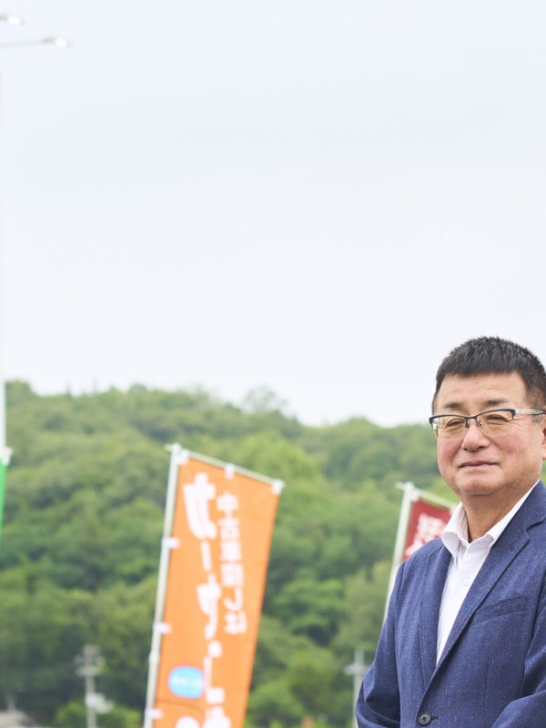
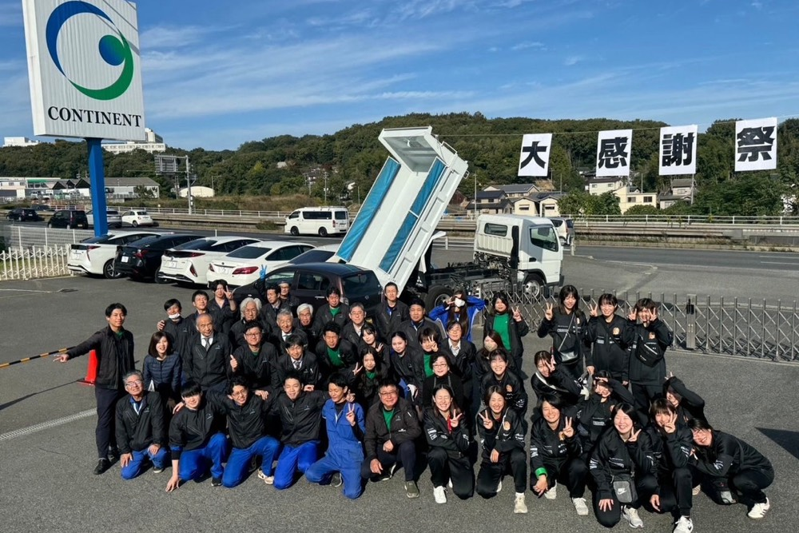
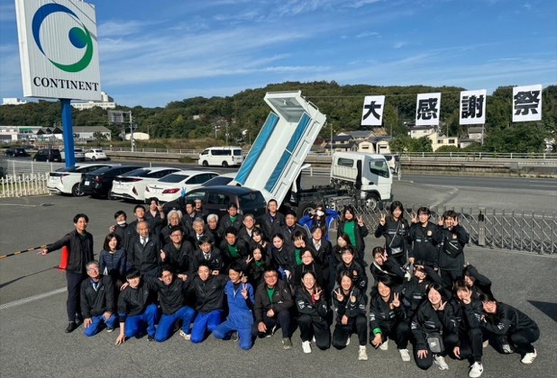
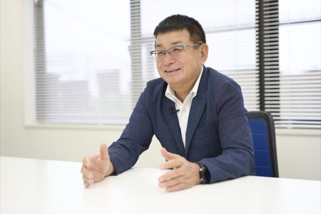
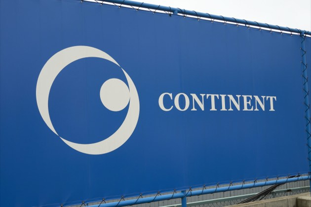
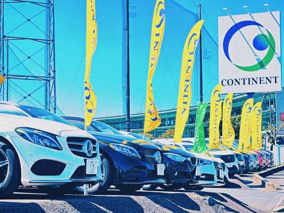
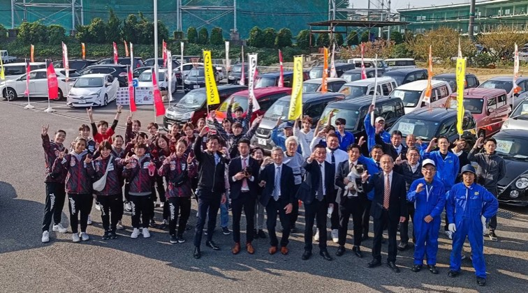
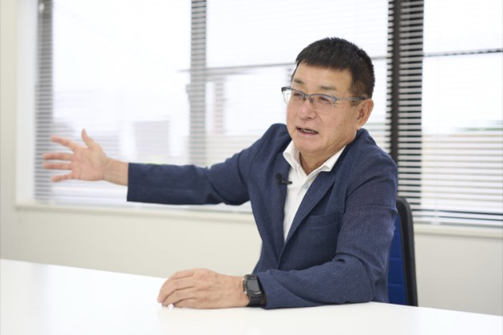
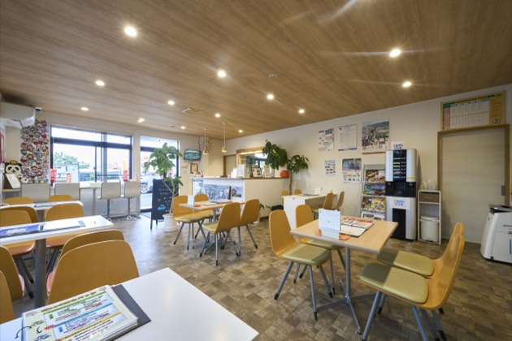
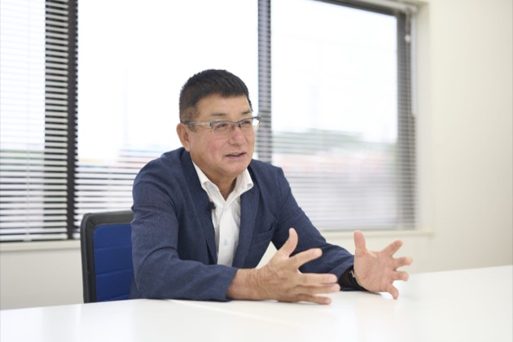

雄大な志で未来へ挑むコンチネント
平松 晃satoshi hiramatsu
株式会社コンチネント
1953年生まれ、岡山県出身。松下電器産業にて半導体製造の自動化開発に携わった後、世間を広げるため退職。飛び込み営業を経て昭和54年に自動車事業を創業。社名変更を重ねながら、現在は売上35億円規模の企業へと成長させた。
企業サイトを見るCHAPTER 01
創業の原点と社名に込めた想い

Qパナソニックという大企業を退職し、自動車業界に飛び込んで独立された経緯を教えてください。
A私は学校を卒業した後、大阪の松下電器産業(現パナソニック)に入社しました。生産技術の部署に配属され、当時は非常に原始的だった半導体(集積回路)の製造工程を自動化するための設備開発という、最先端の仕事に情熱を注いでいました。しかし仕事も日々の寮生活もすべてが社内の人間関係だけで完結している環境に対して、徐々に危機感を抱くようになったのです。「もっと広い世界を知り、世間一般の厳しさや仕組みを学びたい」という強い想いが込み上げ、3年2ヶ月で退職を決意しました。
その後、地元である岡山へ戻り資本金わずか80万円の小さな会社でオイル添加剤やカーワックスの飛び込み営業を始めました。大企業を相手にする営業活動は当初とても恐ろしいものでしたが「殴られはしない、せいぜい罵声を浴びるくらいだ」と自分に言い聞かせ、勇気を持って体当たりで挑んでいきました。この泥臭い営業経験を通じてお客様と直接つながる小売ビジネスの重要性を確信し、昭和54年に自動車事業を創業したのです。
Q社名を「コンチネント」へと変更された理由と、そこに込められた意味を教えてください。
A創業当初は「三和通商」という名前からスタートし、その後「三和商事」「ユアーズ」へと社名を変更しながら、最終的に現在の「コンチネント」へと至りました。この社名は英語やポルトガル語で「大陸」を意味する言葉に由来しています。組織として「雄大で力強い存在でありたい」という私の強い願いを込めてこの名前を考案しました。
CHAPTER 02
プロとしての「練習」と接客のこだわり
Q同業他社が非常に多い自動車業界において、御社がお客様から選ばれ続けている強みは何ですか?
A自動車という商品はどこの販売店で購入してもその性能や品質そのものは全く同じです。トヨタの車はどこで買ってもトヨタの車であり、「コンチネント独自の車」というものは存在しません。だからこそ、私たちが最も差をつけなければならないのは、お客様に対する「姿勢」と「接客の質」にほかなりません。
Q御社が社内で徹底されているという「プロとしての練習」について詳しく教えてください。
A多くの社会人は、仕事が始まると日々の業務をこなすだけで、スキルアップのための「練習」をしなくなってしまいます。しかし、プロ野球選手やプロゴルファーが毎日必死に練習を重ねるように、ビジネスのプロである私たちも、接客やセールストークの練習を怠ってはならないというのが私の強い持論です。そのため、当社では社員同士で毎日のようにロールプレイングやトークのトレーニングを重ねています。








CHAPTER 03
売上50億円への挑戦と未来への事業承継
Q現在の事業規模と今後の具体的な売上目標や展望についてお聞かせください。
A現在のコンチネントは今期の売上目標として35億円を掲げており、これは日々の実直な営業活動の積み重ねによって十分に達成可能な射程圏内にあります。しかし、私たちの挑戦はここで終わりではありません。かつてバブル崩壊の荒波に揉まれ複数あった店舗を縮小せざるを得ないという血の滲むような辛い経験を味わいました。あの苦境を乗り越え、地道に信頼を回復してきたからこそ今の強い組織があります。
Q2年後の事業承継を見据え経営者としてどのような未来の目標を描いていますか?
A私は現在72歳を迎えて今後の大きな節目として、2年後に息子へ社長の座を譲り自身は会長に退くという具体的な事業承継のロードマップを描いています。しかし、ただ席を譲るのではなく身を引くまでの残り2年間で先ほど申し上げた売上50億円という目標を必ず達成し、次世代がさらに大きく羽ばたける盤石な経営基盤を完成させて引き渡したいという、強い情熱と覚悟を持っています。